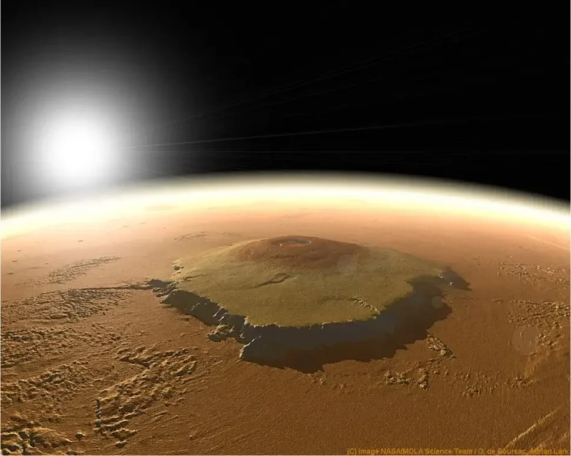

Marte conhecido como o planeta vermelho, o quarto planeta do nosso sistema.

Ele tem a maior montanha (vulcão) do sistema solar, o Monte Olimpo.

Marte é o quarto planeta a partir do Sol e o segundo menor do Sistema Solar, perdendo apenas para Mercúrio. Conhecido como o "Planeta Vermelho", sua coloração vem do óxido de ferro presente no solo. É um planeta rochoso, com uma atmosfera fina, calotas polares, desertos, vulcões e vales enormes, como o Monte Olimpo (a maior montanha de um planeta) e o Valles Marineris, um imenso desfiladeiro. Apesar de ter apenas 38% da gravidade da Terra, Marte tem estações do ano parecidas com as nossas, devido à sua inclinação axial. Possui duas pequenas luas, Fobos e Deimos, que podem ser asteroides capturados. Atualmente, várias sondas e robôs exploram Marte em busca de sinais de vida passada e conhecimento sobre seu clima e geologia.